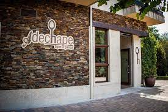
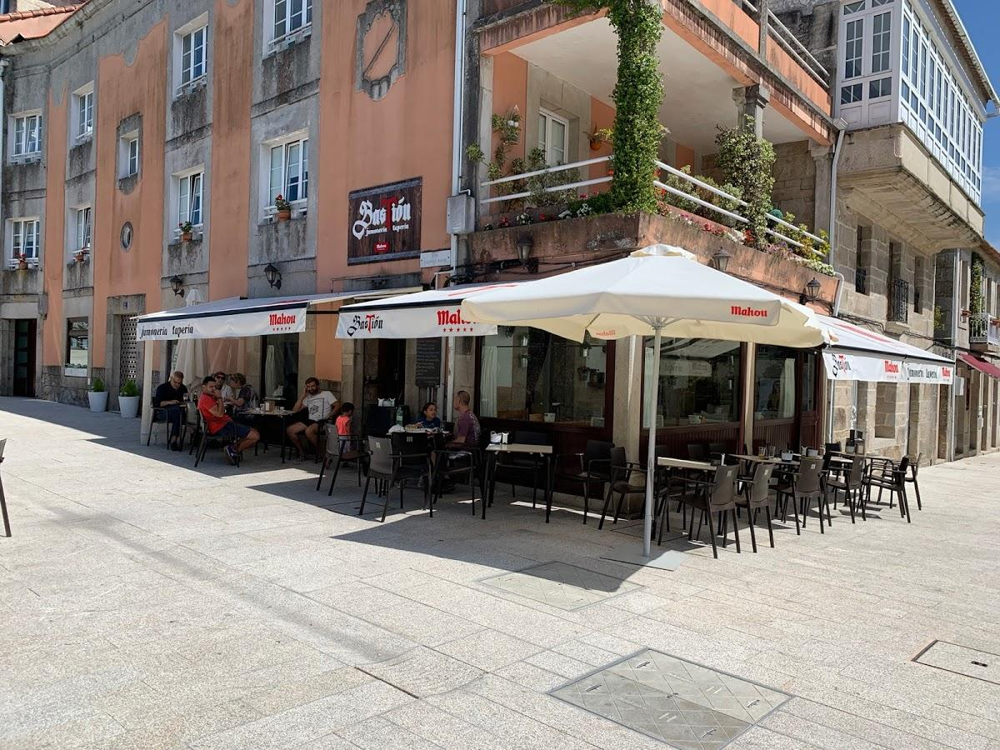

🚗
🚗
El Real Monasterio de Oia es un antiguo monasterio cisterciense fundado en el siglo XII, situado en la provincia de Pontevedra, en la comunidad autónoma de Galicia, España. Fue declarado Bien de Interés Cultural en 1931.

La Subida a Oia es una prueba de montaña perteneciente al Campeonato Gallego de Montaña en la que cada año se reunen más de medio centenar de vehículos para medirse en la increíble subida.
Tapería gallega, paellas por encargo, gran variedad de tapas, tostas, entrecot, secreto ibérico, disponemos de menú del día y medio menú. El local tiene terraza exterior, se acepta el pago con tarjeta y servicio wifi para clientes.
Si deseas degustar platos de la cocina española, no pierdas la oportunidad de venir a este restaurante. En Taperia jamoneria basTion, pide sus singulares croquetas, su sorprendente cocido y sus perfectamente elaboradas tapas. Basándonos en las opiniones de los críticos, aquí los camareros ofrecen un estupendo vino o una espectacular cerveza. Una serie de clientes mencionan que puedes probar un buen café en este lugar.
